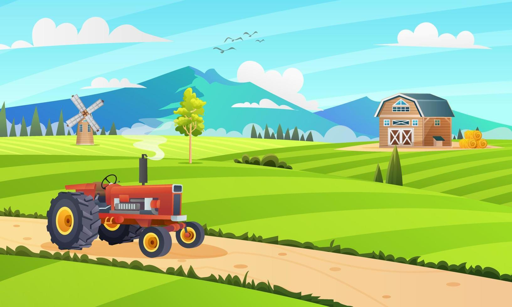
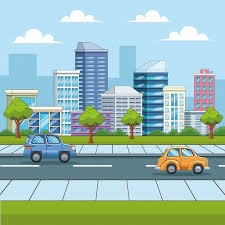

Introdução
Explore a jornada das oportunidades que surgem ao fazer a transição do campo para a cidade.
Vida no Campo
A vida no campo oferece uma conexão única com a natureza e oportunidades de trabalho em agricultura.
Vida na Cidade
A cidade traz diversas oportunidades em diferentes setores, além de acesso a serviços e infraestrutura avançados.
Oportunidades
Seja no campo ou na cidade, há inúmeras oportunidades para crescimento e desenvolvimento pessoal e profissional.